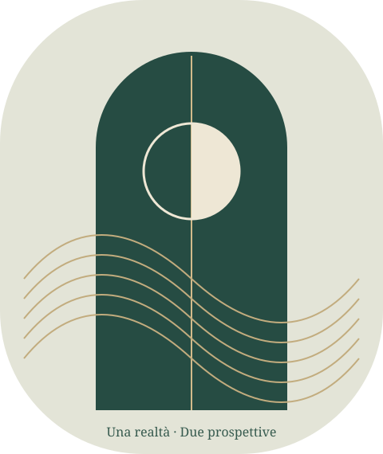

Filosofia e letteratura · gbprof
Schopenhauer
Se il mondo non è ordinato per la felicità dell’uomo, come si può vivere?
Un ambiente di studio per seguire un pensiero e poi metterlo in dialogo con la letteratura, senza perdere le differenze.

Percorso A · Undici lezioni
Comprendere
Schopenhauer
Dall’apparire delle cose all’esperienza del corpo, dal desiderio alla domanda sulla liberazione.
Entra nel percorso filosofico →Percorso B · Quattro problemi e una sintesi
Schopenhauer
e la letteratura
Foscolo e Leopardi davanti alle stesse domande. Un confronto futuro con Verga già predisposto.
Entra nel confronto letterario →Prima leggere, poi ricostruire
Le domande precedono le spiegazioni e le mappe arrivano alla fine. Leggi il testo, ricostruisci le relazioni e confronta il tuo ragionamento con il riscontro proposto. La verifica finale rimescola domande e risposte e indica che cosa ripassare.
Verifica e recupero · Fonti e metodo
Porta il percorso con te
Dopo il primo caricamento completo, lezioni, mappe e verifiche sono disponibili anche senza rete. I collegamenti a Foscolo, Leopardi e alle fonti esterne richiedono una connessione. Su iPad puoi usare Condividi → Aggiungi alla schermata Home; negli altri browser compatibili usa il comando di installazione.